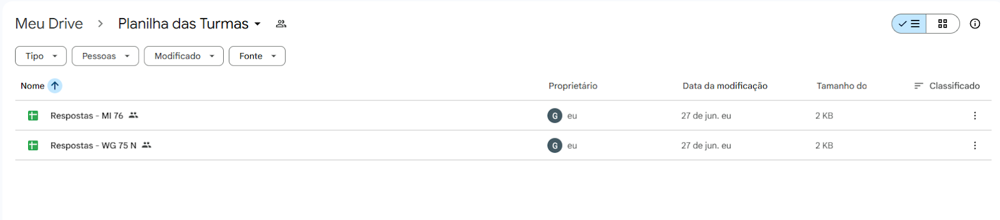

Manual da Coordenação
Tutorial Análise dos Dados
A coordenação pode analisar os dados das turmas através das planilhas geradas, utilizando filtros e ferramentas para melhor visualização e acompanhamento.
Ao entrar na planilha a equipe pedagógica poderá visualizar os seguintes dados:
A coordenação tem acesso somente aos dados, podendo visualizá-los da seguinte forma: Através do link https://drive.google.com/drive/folders/1WRv92iKjCzGsl374bsusUzwjWfJF79jr?usp=sharing que é uma pasta no Drive com as planilhas de todas as turmas. A coordenação pode procurar a turma através do nome que fica no final, já que todas as planilhas estão sendo salvas como “Respostas - Turma e nº da turma”.
Carimbo de data e hora, dia e a hora exata em que o representante respondeu ao formulário:
.png)
Endereço de e-mail que o representante utilizou para responder ao formulário:
.png)
Nome completo(sem apelidos ou abreviações) do representante da turma:
![Seção nomeada como 'Professores e Unidades Curriculares – [Nome da turma]'](imgcoordenacao/image (3).png)
Turma do Representante: Sabemos que ao abrir a planilha, a equipe pedagógica já tem conhecimento de que turma o representante é, mas é esta pergunta que faz com que sejam separadas as planilhas por turma:
.png)
O nome do professor que estava lecionando:
.png)
A unidade curricular que o professor estava lecionando no período:
.png)
Os alunos que estavam presentes e os que não estavam presentes:
.png)
A data em que a aula ocorreu:
.png)
Horário que a aula começou:
.png)
Horário em que a aula terminou:
.png)
Se a aula realmente aconteceu com o professor presente e conteúdo aplicado:
.png)
Se a aula realmente aconteceu, o que foi feito nela:
.png)
Observações adicionais (opcional):
.png)